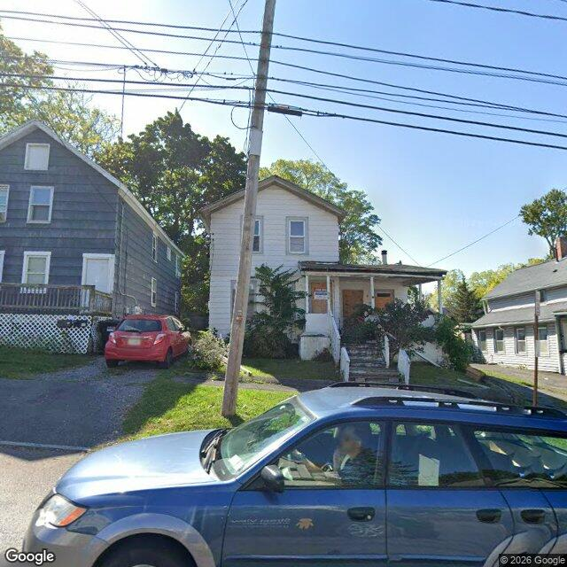

Property entry
317-19 Seventh North St
Published 2026-10-29T12:08:34+00:00
Parcel key: 003-19-140

City records
Matches use parcel IDs or normalized property addresses. Nearby properties are not treated as matches. Records may include historical or closed cases; check each record's status and dates. Publication dates are not source-data dates.
Vacant properties 1
- Latitude
- 43.08025207
- Longitude
- -76.15449943
- ObjectId
- 1315
- Owner
- GSPDC
- OwnerAddress
- 1941 S Salina St Ste Syracuse, NY 13205
- PropertyAddress
- 317-19 Seventh North St
Records refreshed 2026-10-27.
Rental registry 0
No matches stored for this feed. The feed or address matching may be incomplete; this is not confirmation that no records exist.
Records refreshed 2026-10-27.
Code violations 7
- Latitude
- 43.08025207
- Longitude
- -76.15449943
- Neighborhood
- Court-Woodlawn
- ObjectId
- 141988
- SBL
- 003.-19-14.0
- Vacant
- Residential
- Latitude
- 43.08025207
- Longitude
- -76.15449943
- Neighborhood
- Court-Woodlawn
- ObjectId
- 141989
- SBL
- 003.-19-14.0
- Vacant
- Residential
- Latitude
- 43.08025207
- Longitude
- -76.15449943
- Neighborhood
- Court-Woodlawn
- ObjectId
- 141990
- SBL
- 003.-19-14.0
- Vacant
- Residential
- Latitude
- 43.08025207
- Longitude
- -76.15449943
- Neighborhood
- Court-Woodlawn
- ObjectId
- 141991
- SBL
- 003.-19-14.0
- Vacant
- Residential
Records refreshed 2026-10-27.
Unfit properties 1
- Latitude
- 43.08025207
- Longitude
- -76.15449943
- ObjectId
- 383
- SBL
- 003.-19-14.0
- address
- 317-19 Seventh North St
- area_involved
- House
Records refreshed 2026-10-27.
AI image observations (unverified)
These observations are generated from an image, not an inspection or an official code finding. No human verification is recorded here.
Image capture date: Not recorded. The entry publication date does not establish the age of the image.
Automated image description
The image shows a two-story residential building with a visible front yard. There are no overt signs of disrepair or neglect, and no abandoned or discarded items. The exterior appears to be well-maintained, with the landscaping and yard being typical for a suburban home. There is a car parked in the driveway and what looks like a whiteboard in the window, suggesting that the property is inhabited. No visible issues or code violations are evident in the image.
Property type guess: single_family
Visible conditions
- The yard and landscaping are well-maintained with no overt signs of neglect or disrepair
- There are no visible issues such as debris, fire damage, or structural damage
- The exterior of the house shows no signs of disrepair or neglect
- There are no visible issues related to vegetation overgrowth
Condition scores
- Roof
- good
- Siding Or Facade
- good
- Windows Doors
- good
- Porch Or Entry
- good
- Yard Or Lot
- good
- Trash Debris
- none_visible
- Vegetation Overgrowth
- none_visible
Visible flags
- Boarded Windows Or Doors
- no
- Fire Damage Visible
- no
- Structural Damage Visible
- no
- Vacancy Signs Visible
- no
- Active Construction Visible
- no
Possible image-only flags
- No visible issues not already recorded in the known public records
AI review boxes
- The house has a visible front yard: It is a typical residential property with a front yard visible in the image
Review reasons
- Possible image-only issue
Image quality
- Available
- True
- Bytes
- 91106
- Needs Rerun
- False
['The image appears to be of recent vintage, and the view is not obstructed, allowing for a clear assessment of the visible conditions. The image quality is good, and there is no visible issue not already recorded in the known public records.']
ACS tract context
Census Tract 2; Onondaga County; New York
- Total population
- 3511
- Median household income
- 51848
- Poverty rate
- 28.1
- Housing units
- 1686
- Vacancy rate
- 14.7
- Renter-occupied share
- 50.1
- Median gross rent
- 146700
OpenStreetMap nearby
60 meter search radius
Nearby map data is temporarily unavailable. This does not mean there are no mapped features.